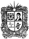

RESULTADOS DE ADMISIONES
SEGUNDO PERÍODO ACADÉMICO AÑO 2014
PROGRAMAS DE PREGRADO
Gracias por preferir a la Universidad Distrital.
La publicación de resultados de aspirantes, será el 23 de junio de 2013.